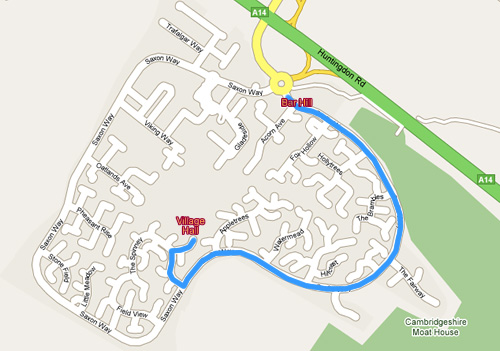

About
Bar Hill Cricket Club currently has an adult Saturday league team competing in the CCA Junior League, a Midweek team competing in the CBHL and a Youth team competing at under-13 level in the CYCA. The club also arranges several friendly matches each season. We always welcome new players of any ability. We are also actively building a Youth Section. For more information or to join, please email: info@barhillcricket.org.uk
Bar Hill Cricket Club has ECB Clubmark status which shows that a club is sustainable, well run and provides the right environment for its members. Clubmark accreditation also means the club is recognised as a safe, rewarding and fulfilling place for participants of all ages.
Location
Bar Hill Cricket Club is based in Bar Hill, just outside Cambridge.
The address for our ground is:
Bar Hill Village Hall
The Spinney
Bar Hill
CAMBRIDGE
CB23 8SU
Directions:
- Upon entering the village exit the roundabout at Crafts Way. (The exit after the Hotel.)
- Follow the road round the village, and take the ninth exit on your right, The Spinney.
- Take the first right and follow round into the village hall car park.
The changing rooms can be found at the car park side of the village hall. The pitch is on the village green on the far side of the village hall.
Adult Matches & Fees
For Saturday matches all selected players are expected to arrive at the Village Hall by 12.30pm, unless alternative arrangements have been made with the captain. Matches start promptly at 1.30pm.
Arrangements for midweek and friendly matches vary, so please confirm arrangements with the appropriate captain.
All Games
All players are expected to pay their match fee to the captain before the game commences. Fees for the 2019 season are as follows:
£10 annual membership for adult playing members
League match: Adult: £10 // Concessions: £5
Midweek & any other adult T20 match: Adult: £5 // Concessions: £3
£25 annual subscription for youth members
Concessions are: the captain, those aged under 18, those in full-time education, those who are unemployed and in receipt of benefits, and those who are aged over 65.
All players are expected to take turns at umpiring and scoring as required. If you are not sure how to umpire or score, there are many people in the club that would be willing to teach you.
Home Games
All players are expected to help in getting the pitch ready before the game and putting everything away after
the game. This includes assisting with the following:
- Poles to be removed from/returned to square
- Rope
- Scoreboard
- Stumps
- Umpires coats with bails
- Setting up/clearing away teas
- Ensuring drinks are prepared
- Helping with umpiring and/or scoring
- Plus other duties as required
The tea rota consists of the players who played the most games for the club in the previous season (not including team captains). If you are unable to do the week you have been allocated, please swap with someone else. As the season progresses, extra games may be arranged, and you may find yourself added to the rota. Instructions of what to do for the teas is also below.
Away Games
Wherever possible, the minimum number of cars practical to transport players and kit should be used. If you a regular passenger, please consider giving the driver a donation towards their petrol costs.
Youth Matches & Fees
Youth fees will be £25 for the 2019 season. This covers all outdoor training sessions and matches. Youth fees should be paid at the beginning of season and should be submitted with a completed youth membership form. Indoor training sessions will be subject to a small extra charge.
Parents/Carers are kept informed of matches and training sessions by regular email communications.
Downloads & Forms
Emergency Procedures and Information - PDF DOC
Information needed if there is an incident/accident
Incident/accident reporting form - PDF DOC
This form nees to be filled out if there is an incident/accident at a Club event.
Adult membership form 2019 - PDF DOC
To be completed by all adult members each season
Adult membership information pack (Updated 2017) - PDF
Information for members of Bar Hill Cricket Club
Youth membership & consent form - PDF DOC
To be completed by the parent/guardian of all members that are 18 or under at the start of the 2019 season
Consent form for juniors playing in adult cricket - PDF
DOC
To be completed by the parent/guardian when an under-18 is to participate in adult league cricket
Club Constitution - PDF DOC
Describes how the club is formed, organised and run. Accepting this is a condition of membership
Code of Conduct - Adult Members & Guests - PDF DOC
Describes the standards of behaviour expected from all adult members and guests. Accepting this is a condition
of membership
Code of Conduct - Young People - PDF DOC
Describes the standards of behaviour expected from all youth members. Accepting this is a condition of
membership
Child Protection Policy - PDF DOC
Describes how the club treats and deals with young people. Accepting this is a condition of membership
Health & Safety Policy - PDF DOC
Describes the rights and responsibilities of members regarding health & safety. Accepting this is a
condition of membership
Inclusion & Diversity Policy - PDF DOC
Describes the rights and responsibilities of members regarding inclusion & diversity. Accepting this is a
condition of membership
Development Plan - PDF DOC
Bar Hill Cricket Club's 2017-2021 Development Plan